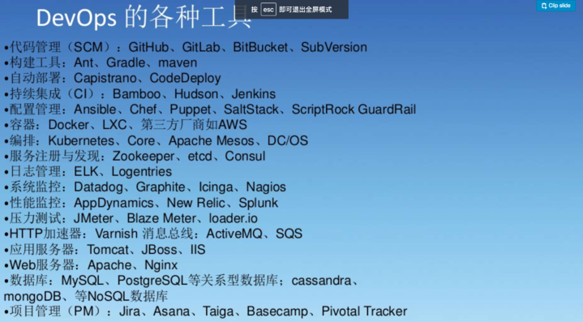

服务器使用分工及发布流程服务器环境分工
每个系统四套环境
1. 开发环境
2. 测试环境
3. 回归测试环境 (预生产环境)
4. 生产环境
各个环境说明以及发布流程
开发环境
环境说明
* 项目负责人管理
* 开发团队共享使用
* 运维团队监控、协助、调整资源配额
流程说明
* 开发团队自行商议
测试环境
环境说明
* 测试组负责人管理
* 测试团队共享使用
* 运维团队监控、协助、调整资源配额
如果有项目多分支同时要进行测试，测试人员可以向运维申请临时测试服务器，申请时标注以下信息。
* CPU几核
* 内存
* 网络要求
* 临时服务器存活期
* 临时服务器默认存活期2周
* 需要续期的话测试团队至少提前一天向运维团队提出续期申请
流程说明
开发完毕后，由项目负责人发邮件至测试团队申请提测，标明以下事项：
* 代码所在位置（分支或者tag）
* 功能变动
* 网络变动
* SQL脚本
* 发布脚本
由测试组负责测试由代码变更影响的功能。
回归测试环境
环境说明
* 测试组负责人管理
* 测试团队共享使用
* 运维团队监控、协助、调整资源配额
流程说明
测试完毕后
* 把数据库变更的 SQL 脚本交给 DBA 审核
* 由测试组把通过测试的代码拷贝到回归测试环境
* 测试组负责全量回归
生产环境
环境说明
* 运维团队管理
* 运维以外人员无权登录
* 运维团队监控、调整资源配额
流程说明
需要发布系统到生产环境时，需要项目负责人提供以下材料：
* 发布的代码
* 发布脚本
* 更新数据库SQL脚本
* 生产环境的配置文件
* 域名
* 发布时间
* 环境依赖变更
* 需要运维检查的注意事项
运维人员需要比对运维组的线上发布检查列表
1. 数据库更新脚本
2. 配置文件及脚本
3. 域名指向检查
4. 测试是否跑通
5. 回归测试是否跑通
6. 目标机器环境是否满足发布条件
7. 数据库更新脚本是否经过 DBA 审核
注意事项
* 运维会根据需要分配所需硬件资源，如内存，CPU，硬盘等
* 运维定期负责检查各个系统的运行情况，监控内存，CPU，硬盘使用情况，如果需要可以做出动态调整
* 回归测试前，针对数据库的修改脚本需要DBA审核通过后方可执行
